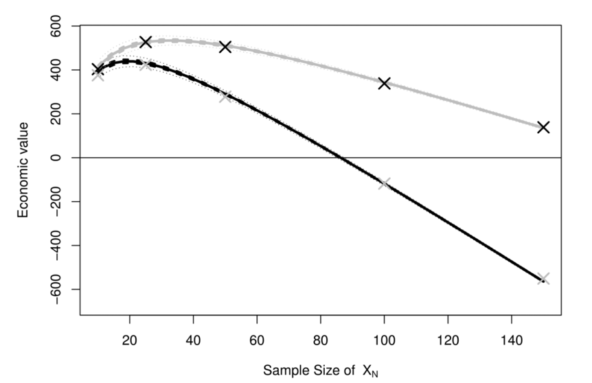

Statistical modelling for the Value of Information analysis - should we change how we do medical research (spoiler: yes, we should…).
As an even more annoying Bayesian Statistician (who thinks that Bayesians should tell every Statistician what to do…), that becomes even more interesting: decision-making is fundamentally linked with the concept of epistemic uncertainty. As much evidence as I may be able to put together, be it from an experimental (e.g. in trial-based health economic evaluations), or an observational setting (as in most “decision-analytic models”), we are never in a position of knowing the underlying truth and that remaining layer of uncertainty determines how we think about the best course of action.
One of the research areas on which I have been working more closely is the so-called “Value of Information” (VoI) analysis. The ideas are very simple (but the methods are not!): given current evidence, we can make a decision analysis and determine what action we should take. Given what we know right now and all our modelling assumptions, we can decide whether the “new intervention” should be funded, or rather denied in favour of existing treatments, which prove better value for money. But almost invariably, there is a third way, which is “it looks like the new intervention may be optimal, but there is still much underlying uncertainty, which drives the decision”. And this means delaying the final decision until more evidence becomes available.
In a nutshell, VoI is concerned in quantifying the value of not making a decision based on current evidence and defer until we acquire more evidence. If the cost of buying new data outweighs its benefits, then we really should not agonise over the decision and make one now. If not, we should prioritise research accordingly and change our perspective, to defer a final decision until we know more.
While, I think, a very simple concept, VoI calculations are extremely complex and, until very recently (I am proud to say thanks also to seminal contributions by UCL (among which Heath et al, 2016; Heath et al, 2019), we could not really use it, because the computational effort would be too complex and time-consuming.
I always like the “tail of two stupid examples” to describe this: imagine that you have two interventions and that, given current evidence, the probability that the first one is more cost-effective is 0.51. There is a very large uncertainty over this results, BUT: if we get it wrong (and so, in the future, it turns out that the second is, in fact, the most value for money), the consequences are that we waste £3 and lose 0.0000001 clinical benefits across the entre population of interest. Now consider another case in which the probability that a new intervention is more cost-effective is 0.99999, so basically we are certain about it, given current model and evidence. BUT: in this case, if we get this wrong, we generate an increase of £1b and kill everyone in the process. Obviously, in the first case, the large uncertainty is immaterial, while in the second, the tiny uncertainty is potentially catastrophic.
Using Statistical methods based on Gaussian Process Regression (which, in a nutshell, is a non-parametric extension to simpler linear models, aimed at estimating complex, non-linear relationships among variables using observed data - see Williams and Rasmussen, 2006 for many more details), new methods have been devised that allow calculations for VoI in reasonable computing time and with great precision.
The most important quantity that a VoI analysis can produce is the Expected Value of Sample Information, i.e. the monetary value that derives by conducting a specific study, with a set design and for a given sample size. Crucially, the value is determined in terms of both the probability that the new evidence would change the current optimal decision and the pay-offs for doing this.
Figure 1 shows an example of how we can use VoI and to prioritise and design future research. The two curves show the Economic value (often termed “Expected Net Benefit of Sampling”), obtained as the expected value of collecting more data (for different sample sizes of a set design) minus the cost of that data collection process. The darker curve identifies a study design that is more proned to loss to follow up, while the lighter curve shows a study with an incentive embedded (which slightly increases the overall costs, but also ensures better retention of individuals).
Analyzing the ENBS across different potential sample sizes allows us to see that optimal study design is respectively with 16 and 27 patients enrolled, for the incentive and the no-incentive study. In fact, the design more prone to missingness has decreasing returns and thus if we selected too large a sample size it may in fact waste our resources, because the gain in information would be lower than its cost of acquisition.

Crucially, these considerations may contrast starkly with “standard” sample size calculations and power analysis, which may overstate the optimal sample size - this is due to the mathematical quirk that in this case we would focus on achieving a set level of precision in the statistical estimates. This is essentially akin to focusing on the probability of cost-effectiveness in the tale of two stupid examples above, but without looking at the actual pay-offs.
In contrast, the ENBS rightly accounts for both the dimensions - the uncertainty and its consequences and thus, potentially, gives us a better assessment of whether we should in fact proceed with a new study and with a set design. This can be used to contrast different settings too: is it best to have a small, unbiased experiment, or are we better off using large observational data (provided we manage to de-bias the inevitable selection problems)?
I think we should embed these considerations in the way in which we approach medical research and VoI analysis should be central to the whole process of statistical modelling in this field, in particular. The advantages would arise both at the point of prioritising research (e.g. when to decide what to fund and what areas are more likely to produce the largest benefit and thus, potentially, a better allocation of financial resources for research), as well as at the point of judging the feasibility of decisions, in the face of uncertainty.
Who better than a Bayesian statistician to do this sort of things?…
References
A Heath, I Manolopoulou, G Baio. (2016). “Estimating the expected value of partial perfect information in health economic evaluations using Integrated Nested Laplace Approximation”. Statistics in Medicine
A Heath, G Baio. (2018). “Calculating the Expected Value of Sample Information using Efficient Nested Monte Carlo: A Tutorial”. Value in Health
A Heath, I Manolopoulou, G Baio. (2019). “Estimating the Expected Value of Sample Information Across Different Sample Sizes Using Moment Matching and Nonlinear Regression”. Medical Decision Making
Williams, C., Rasmussen, E. (2006). Gaussian processes for machine learning. MIT press Cambridge, MA.